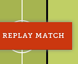
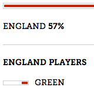
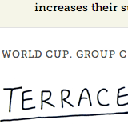

Terrace Tweets
- 
- 
- 
With the FA Cup Final fast approaching, sports brand and ball-sponsor Umbro asked us to build something to capture the online excitement around the match. The result was Terrace Tweets, an app which measured, live, the support that each of the sides was receiving on Twitter.
Using 'possession' as a visual metaphor, the app animates a rolling ten minute aggregation of tweets, which have been categorised using sentiment analysis into support for or against either side.
Beneath the main statistic, a stream shows a selection of the tweets hand-curated by our team, alongside other vital information about the game: the score, goalscorers, and red and yellow cards.
The squad list also contains another subtle visualisation, showing the level of mentions of each of the players on Twitter.
The app received tens of thousands of views during the match, generating interest in Umbro and their social media work.
Subsequently, the app was re-used for an England World Cup match, plotting the level of global support for England vs the USA.